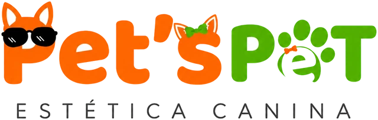
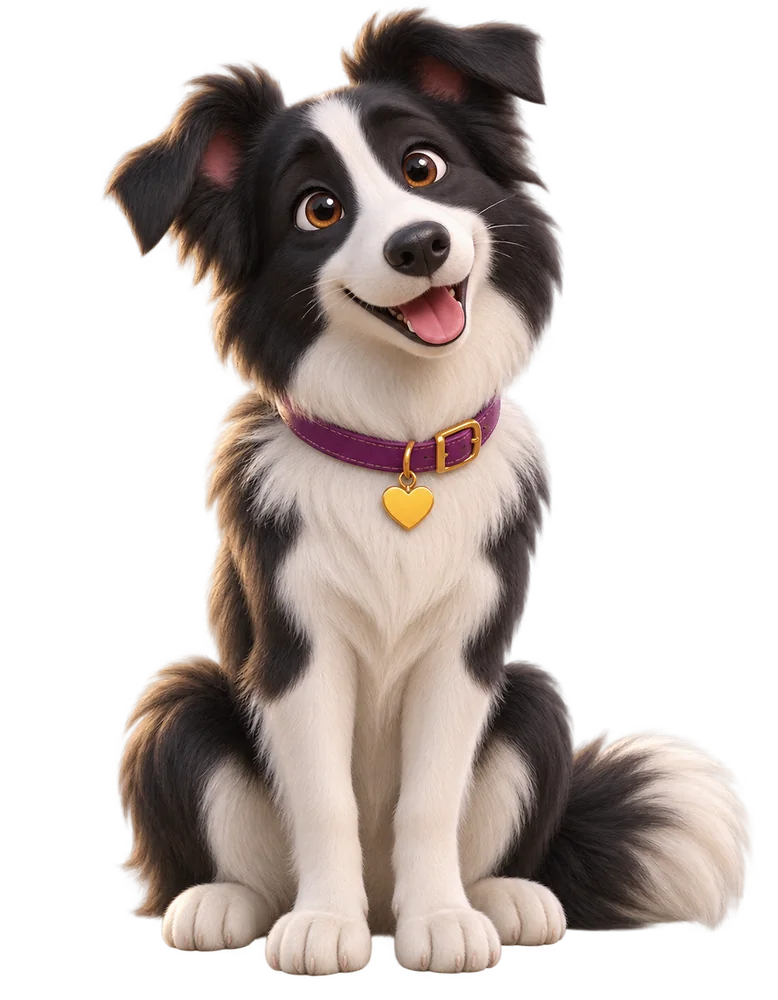
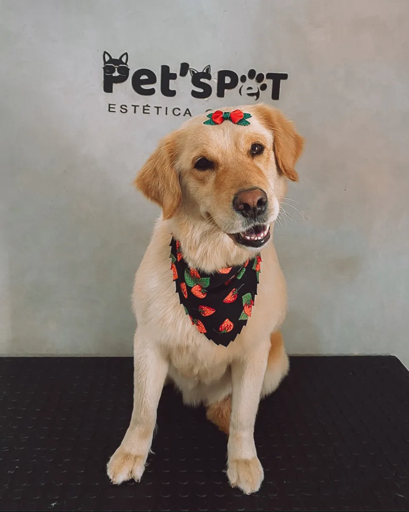

Seu melhor
amigo vem
em 1º lugar.
Banho, tosa e hidratação no tempo dele.
Porque cuidar do seu melhor amigo
é o nosso maior negócio.

né?
PRA TODO TIPO DE AUMIGO
Qual é o mimo de hoje?
Do pós-banho à hora da soneca.
UM POUQUINHO DE TUDO QUE ELE AMA
Pequenos mimos.
Grandes rabinhos felizes.
Escolha com calma.
A sacola de carinho é toda sua.
Uma seleção feita para experimentar cada detalhe da sua nova loja.

cheiroso e feliz.
MUITO ALÉM DE UM BANHO
Tem cuidado.
Tem colo.
Tem Pet’s Pet.
Cada pet tem seu tempo, sua personalidade e um jeito único de receber carinho. Por aqui, o cuidado começa respeitando isso.
Banho & tosa com carinho
Produtos premium e seguros, secagem no tempo do pet e tosa do jeitinho que ele precisa, da tosa bebê à tosa na régua. Converse com a equipe sobre o cuidado ideal para o seu pet.
Hidratação & perfume premium
O toque final do banho: hidratação para os pelos e aquele cheirinho que dura. A equipe explica as opções para cada tipo de pelagem.
Remoção de subpelos & trimming
Para pelagens que soltam muito, como golden, spitz e pastor. Consulte a equipe sobre avaliação e frequência: cada pelagem merece atenção individual.
NOSSO JEITO DE VER O MUNDO
Cuidar do seu melhor amigo
é o nosso maior negócio.
É por isso que, na Pet’s Pet, o carinho vem em primeiro lugar.
Calma no banho, capricho na tosa e atenção a cada aumigo.
CORRE AGENDAR, AUMIGO
Vamos nos conhecer
de pertinho?
Agende o próximo banho, tire uma dúvida
ou encontre aquele mimo para o seu pet.